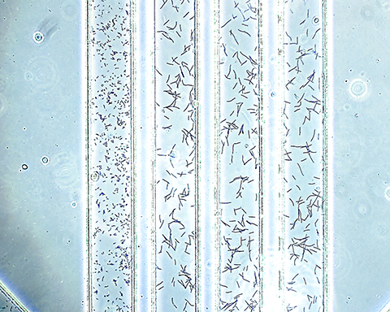

Adding files to the project
How to add files
There are three ways to add file to the project. If it is necessary to process only a single image file the easiest way is to
click the Open file button ( ), which creates a new projects and add
the specified file. Clicking this button will erase the existing project, so to add one more file to the current project the
Add file button (
), which creates a new projects and add
the specified file. Clicking this button will erase the existing project, so to add one more file to the current project the
Add file button ( ) has to be clicked. Finally if the task is to process
a bunch of files located in the same directory, it could be done by selecting the Open folder menu or clicking the corresponding
button (
) has to be clicked. Finally if the task is to process
a bunch of files located in the same directory, it could be done by selecting the Open folder menu or clicking the corresponding
button ( ). All images added to the current project could be viewed by selecting
the corresponding image in the Project Manager.
). All images added to the current project could be viewed by selecting
the corresponding image in the Project Manager.
Image requirements
The Cell Analyzer was mainly developed to process images acquired with the MDCE-5c USB camera. Images captured with other cameras could be
processed as well if they satisfy the following requirements.
- Input image should contain one control and at least one sample.
- All samples are oriented roughly vertically and represented as strips.
- Distance between two neighboring samples is the same for each pair of neighbors.
- Width of the sample strips is the same for all samples.
- Bacteria cells are represented as small black areas.

Example of the input image
For accurate cell detection and feature extraction it is important to have a clear input image. Thus it is crucial to prepare an input image
where all cells and sample borders are easily separated from the background and as much as possible are not overlapped with each other.